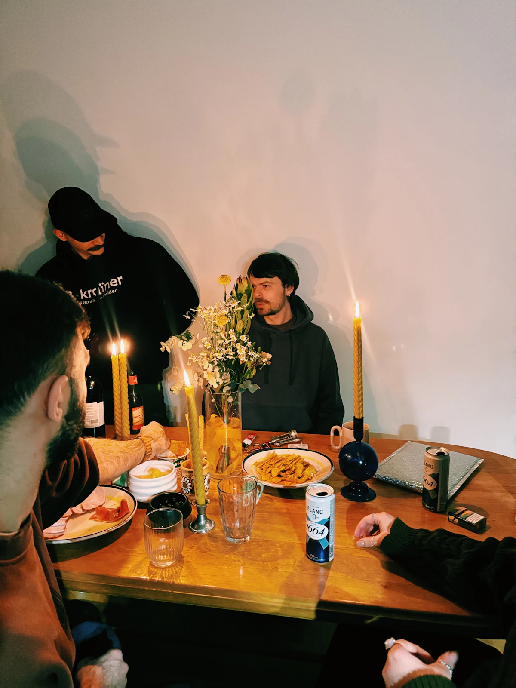

Cerita Pemotretan / artikel konsep
Acara Kecil, Cerita yang Tidak Harus Dipentaskan
Skenario dokumentasi meja makan: kapan mendekat, kapan menunggu, dan bagaimana menyusun urutan foto yang utuh.

Bayangkan sebuah pertemuan komunitas dengan satu meja panjang. Tidak ada panggung atau susunan acara yang kaku. Ceritanya muncul dari orang yang datang, tangan yang menyiapkan makanan, dan percakapan di sela kegiatan. Ini skenario latihan, bukan laporan penugasan nyata.
Kenali alur sebelum acara dimulai
Tanyakan kapan peserta tiba, kegiatan apa yang perlu didokumentasikan, dan siapa penghubung di lokasi. Periksa apakah ada peserta yang tidak ingin difoto serta cara menandai batas itu dengan sopan. Fotografer tidak perlu menunggu ada keberatan untuk menanyakan izin.
Buat daftar singkat: suasana ruangan, aktivitas utama, interaksi, dan satu foto kelompok jika disepakati. Daftar membantu saat kegiatan bergerak cepat, tetapi bukan alasan untuk menghentikan percakapan demi memenuhi semua bingkai.
Beri ruang untuk peristiwa berlangsung
Ambil beberapa foto suasana dari jarak yang tidak menghalangi. Setelah itu perhatikan interaksi yang lebih kecil. Bergeraklah saat ada ruang, bukan saat seseorang sedang menyampaikan sesuatu yang penting. Jika perlu foto terarah, pilih jeda yang disetujui pengelola acara.
Hindari memotret orang pada momen yang dapat membuatnya tidak nyaman tanpa alasan yang jelas. Saat ragu, tanyakan. Kedekatan kamera tidak selalu menghasilkan foto yang lebih baik; konteks meja dan ruangan juga mempunyai peran dalam cerita.
Susun urutan, bukan tumpukan
Saat memilih hasil latihan, coba urutan pembuka, kegiatan, detail, interaksi, lalu penutup. Jangan hanya memilih sepuluh foto ekspresi yang mirip. Satu gambar ruangan dapat menjelaskan tempat, sementara satu detail kecil memberi jeda di antara foto orang.
Periksa juga pemilihan yang adil: apakah dokumentasi terlalu berpusat pada satu kelompok? Pastikan kesepakatan penggunaan dipatuhi sebelum hasil disebarkan. Jika foto perlu dipublikasikan, pilih konteks yang tidak menyesatkan atau memberi kesan dukungan yang tidak pernah diberikan.
Coba sendiri
Susun lima foto latihan menjadi satu cerita. Tuliskan fungsi setiap foto: pembuka, kegiatan, detail, interaksi, penutup. Jika dua foto menjalankan fungsi yang sama, coba pilih salah satunya.
- Gunakan alat yang tersedia dan minta izin sebelum memotret orang.
- Simpan satu catatan untuk dibandingkan pada latihan berikutnya.